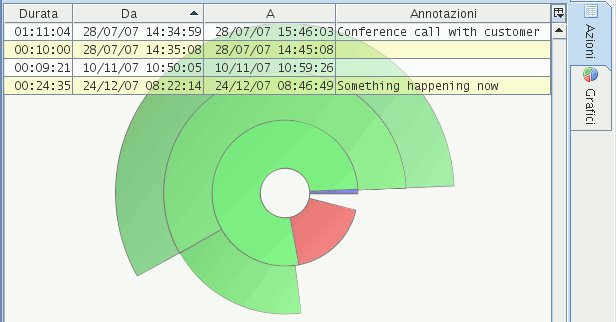
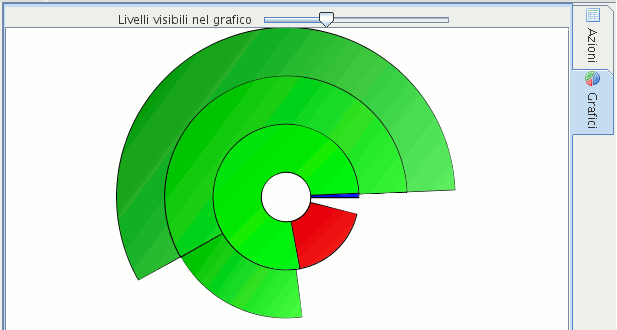

Pannello principale
Il pannello principale è la parte più estesa
dell'applicazione e consente di accedere a due viste:
E' possibile scegliere tra una delle due viste cliccando sulle
etichette poste su lato destro.
Selezionando l'etichetta Azioni viene visualizzata la
tabella contenente l'elenco delle azioni.

Illustrati
on 1: Pannello principale su "Azioni"
Lo sfondo della tabella lascia intravvedere il grafico. In
caso di problemi è possibile disabilitare la visualizzazione del
grafico sullo sfondo tramite la voce del menù |Visualizza|Mostra
l'ombra del grafico|
Grafico a torta
Cliccando sull'etichetta
Grafici la tabella scompare e viene
visualizzato solamente il grafico a torta.

Illustration
2: Pannello principale su "Grafico"
Esso rappresenta la durata delle
azioni appartenenti all'attività correntemente selezionata
nell'albero o a sotto-attività.
Ogni livello del grafico
rappresenta un livello di sotto-attività.
Passando con il mouse sopra
ad un'area del grafico vengono visualizzate delle informazioni
aggiuntive.
|